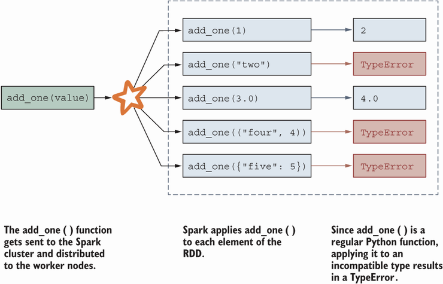

Resilient distributed datasets#
Resilient distributed datasets, or RDDs, are the fundamental blocks in PySpark.
What is RDD?#
RDD is essentially a collection of unordered objects,
or a mathematical set,
or a Python list of objects,
or similar to a JSON.
Fig. Collection of objects |
import os
os.environ["JAVA_HOME"] = r"C:\Program Files\Java\jdk-11.0.2"
os.environ["SPARK_HOME"] = r"C:\Program Files\Spark\spark-3.5.5-bin-hadoop3"
import findspark
findspark.init()
# set up an RDD
from pyspark.sql import SparkSession
spark = SparkSession.builder.appName('rddExample').getOrCreate()
collection = [1, "two", 3.0, ("four", 4), {"five": 5}]
sc = spark.sparkContext
# list promoted to RDD
collection_rdd = sc.parallelize(collection)
print(collection_rdd)
ParallelCollectionRDD[0] at readRDDFromFile at PythonRDD.scala:289
spark
SparkSession - in-memory
collection_rdd.collect()
[1, 'two', 3.0, ('four', 4), {'five': 5}]
# view an RDD
collection_rdd
ParallelCollectionRDD[4] at readRDDFromFile at PythonRDD.scala:289
Why RDD if we have dataframes?#
If the data at hand are more freeformed, using an RDD allows for storage of various types of objects.
Compared to dataframe, which will attempt (and fail) to find a common denominator to fit the data above.
Main ingredients of RDD manipulation#
We cover three main building blocks for using RDDs, inheriting the concept of a MapReduce scheme.
Each of the following building blocks (functions) takes a functional input:
map()filter()reduce()
map through an example#
map() applies the given function to each element of the RDD.
# simple mapping function
def add_one(value):
return value + 1
collection_rdd_p1 = collection_rdd.map(add_one) # think of this as .apply in pandas
collection_rdd_p1.collect()
---------------------------------------------------------------------------
Py4JJavaError Traceback (most recent call last)
Cell In[9], line 1
----> 1 collection_rdd_p1.collect()
File C:\Program Files\Spark\spark-3.5.5-bin-hadoop3\python\pyspark\rdd.py:1833, in RDD.collect(self)
1831 with SCCallSiteSync(self.context):
1832 assert self.ctx._jvm is not None
-> 1833 sock_info = self.ctx._jvm.PythonRDD.collectAndServe(self._jrdd.rdd())
1834 return list(_load_from_socket(sock_info, self._jrdd_deserializer))
File C:\Program Files\Spark\spark-3.5.5-bin-hadoop3\python\lib\py4j-0.10.9.7-src.zip\py4j\java_gateway.py:1322, in JavaMember.__call__(self, *args)
1316 command = proto.CALL_COMMAND_NAME +\
1317 self.command_header +\
1318 args_command +\
1319 proto.END_COMMAND_PART
1321 answer = self.gateway_client.send_command(command)
-> 1322 return_value = get_return_value(
1323 answer, self.gateway_client, self.target_id, self.name)
1325 for temp_arg in temp_args:
1326 if hasattr(temp_arg, "_detach"):
File C:\Program Files\Spark\spark-3.5.5-bin-hadoop3\python\pyspark\errors\exceptions\captured.py:179, in capture_sql_exception.<locals>.deco(*a, **kw)
177 def deco(*a: Any, **kw: Any) -> Any:
178 try:
--> 179 return f(*a, **kw)
180 except Py4JJavaError as e:
181 converted = convert_exception(e.java_exception)
File C:\Program Files\Spark\spark-3.5.5-bin-hadoop3\python\lib\py4j-0.10.9.7-src.zip\py4j\protocol.py:326, in get_return_value(answer, gateway_client, target_id, name)
324 value = OUTPUT_CONVERTER[type](answer[2:], gateway_client)
325 if answer[1] == REFERENCE_TYPE:
--> 326 raise Py4JJavaError(
327 "An error occurred while calling {0}{1}{2}.\n".
328 format(target_id, ".", name), value)
329 else:
330 raise Py4JError(
331 "An error occurred while calling {0}{1}{2}. Trace:\n{3}\n".
332 format(target_id, ".", name, value))
Py4JJavaError: An error occurred while calling z:org.apache.spark.api.python.PythonRDD.collectAndServe.
: org.apache.spark.SparkException: Job aborted due to stage failure: Task 9 in stage 0.0 failed 1 times, most recent failure: Lost task 9.0 in stage 0.0 (TID 9) (mosesyhc-X1Yoga executor driver): org.apache.spark.api.python.PythonException: Traceback (most recent call last):
File "C:\Program Files\Spark\spark-3.5.5-bin-hadoop3\python\lib\pyspark.zip\pyspark\worker.py", line 1247, in main
File "C:\Program Files\Spark\spark-3.5.5-bin-hadoop3\python\lib\pyspark.zip\pyspark\worker.py", line 1239, in process
File "C:\Program Files\Spark\spark-3.5.5-bin-hadoop3\python\lib\pyspark.zip\pyspark\serializers.py", line 274, in dump_stream
vs = list(itertools.islice(iterator, batch))
^^^^^^^^^^^^^^^^^^^^^^^^^^^^^^^^^^^^^^^
File "C:\Program Files\Spark\spark-3.5.5-bin-hadoop3\python\lib\pyspark.zip\pyspark\util.py", line 83, in wrapper
return f(*args, **kwargs)
^^^^^^^^^^^^^^^^^^
File "C:\Users\moses\AppData\Local\Temp\ipykernel_13528\3795280211.py", line 4, in add_one
TypeError: can only concatenate tuple (not "int") to tuple
at org.apache.spark.api.python.BasePythonRunner$ReaderIterator.handlePythonException(PythonRunner.scala:572)
at org.apache.spark.api.python.PythonRunner$$anon$3.read(PythonRunner.scala:784)
at org.apache.spark.api.python.PythonRunner$$anon$3.read(PythonRunner.scala:766)
at org.apache.spark.api.python.BasePythonRunner$ReaderIterator.hasNext(PythonRunner.scala:525)
at org.apache.spark.InterruptibleIterator.hasNext(InterruptibleIterator.scala:37)
at scala.collection.Iterator.foreach(Iterator.scala:943)
at scala.collection.Iterator.foreach$(Iterator.scala:943)
at org.apache.spark.InterruptibleIterator.foreach(InterruptibleIterator.scala:28)
at scala.collection.generic.Growable.$plus$plus$eq(Growable.scala:62)
at scala.collection.generic.Growable.$plus$plus$eq$(Growable.scala:53)
at scala.collection.mutable.ArrayBuffer.$plus$plus$eq(ArrayBuffer.scala:105)
at scala.collection.mutable.ArrayBuffer.$plus$plus$eq(ArrayBuffer.scala:49)
at scala.collection.TraversableOnce.to(TraversableOnce.scala:366)
at scala.collection.TraversableOnce.to$(TraversableOnce.scala:364)
at org.apache.spark.InterruptibleIterator.to(InterruptibleIterator.scala:28)
at scala.collection.TraversableOnce.toBuffer(TraversableOnce.scala:358)
at scala.collection.TraversableOnce.toBuffer$(TraversableOnce.scala:358)
at org.apache.spark.InterruptibleIterator.toBuffer(InterruptibleIterator.scala:28)
at scala.collection.TraversableOnce.toArray(TraversableOnce.scala:345)
at scala.collection.TraversableOnce.toArray$(TraversableOnce.scala:339)
at org.apache.spark.InterruptibleIterator.toArray(InterruptibleIterator.scala:28)
at org.apache.spark.rdd.RDD.$anonfun$collect$2(RDD.scala:1049)
at org.apache.spark.SparkContext.$anonfun$runJob$5(SparkContext.scala:2433)
at org.apache.spark.scheduler.ResultTask.runTask(ResultTask.scala:93)
at org.apache.spark.TaskContext.runTaskWithListeners(TaskContext.scala:166)
at org.apache.spark.scheduler.Task.run(Task.scala:141)
at org.apache.spark.executor.Executor$TaskRunner.$anonfun$run$4(Executor.scala:620)
at org.apache.spark.util.SparkErrorUtils.tryWithSafeFinally(SparkErrorUtils.scala:64)
at org.apache.spark.util.SparkErrorUtils.tryWithSafeFinally$(SparkErrorUtils.scala:61)
at org.apache.spark.util.Utils$.tryWithSafeFinally(Utils.scala:94)
at org.apache.spark.executor.Executor$TaskRunner.run(Executor.scala:623)
at java.base/java.util.concurrent.ThreadPoolExecutor.runWorker(ThreadPoolExecutor.java:1128)
at java.base/java.util.concurrent.ThreadPoolExecutor$Worker.run(ThreadPoolExecutor.java:628)
at java.base/java.lang.Thread.run(Thread.java:834)
Driver stacktrace:
at org.apache.spark.scheduler.DAGScheduler.failJobAndIndependentStages(DAGScheduler.scala:2856)
at org.apache.spark.scheduler.DAGScheduler.$anonfun$abortStage$2(DAGScheduler.scala:2792)
at org.apache.spark.scheduler.DAGScheduler.$anonfun$abortStage$2$adapted(DAGScheduler.scala:2791)
at scala.collection.mutable.ResizableArray.foreach(ResizableArray.scala:62)
at scala.collection.mutable.ResizableArray.foreach$(ResizableArray.scala:55)
at scala.collection.mutable.ArrayBuffer.foreach(ArrayBuffer.scala:49)
at org.apache.spark.scheduler.DAGScheduler.abortStage(DAGScheduler.scala:2791)
at org.apache.spark.scheduler.DAGScheduler.$anonfun$handleTaskSetFailed$1(DAGScheduler.scala:1247)
at org.apache.spark.scheduler.DAGScheduler.$anonfun$handleTaskSetFailed$1$adapted(DAGScheduler.scala:1247)
at scala.Option.foreach(Option.scala:407)
at org.apache.spark.scheduler.DAGScheduler.handleTaskSetFailed(DAGScheduler.scala:1247)
at org.apache.spark.scheduler.DAGSchedulerEventProcessLoop.doOnReceive(DAGScheduler.scala:3060)
at org.apache.spark.scheduler.DAGSchedulerEventProcessLoop.onReceive(DAGScheduler.scala:2994)
at org.apache.spark.scheduler.DAGSchedulerEventProcessLoop.onReceive(DAGScheduler.scala:2983)
at org.apache.spark.util.EventLoop$$anon$1.run(EventLoop.scala:49)
at org.apache.spark.scheduler.DAGScheduler.runJob(DAGScheduler.scala:989)
at org.apache.spark.SparkContext.runJob(SparkContext.scala:2393)
at org.apache.spark.SparkContext.runJob(SparkContext.scala:2414)
at org.apache.spark.SparkContext.runJob(SparkContext.scala:2433)
at org.apache.spark.SparkContext.runJob(SparkContext.scala:2458)
at org.apache.spark.rdd.RDD.$anonfun$collect$1(RDD.scala:1049)
at org.apache.spark.rdd.RDDOperationScope$.withScope(RDDOperationScope.scala:151)
at org.apache.spark.rdd.RDDOperationScope$.withScope(RDDOperationScope.scala:112)
at org.apache.spark.rdd.RDD.withScope(RDD.scala:410)
at org.apache.spark.rdd.RDD.collect(RDD.scala:1048)
at org.apache.spark.api.python.PythonRDD$.collectAndServe(PythonRDD.scala:195)
at org.apache.spark.api.python.PythonRDD.collectAndServe(PythonRDD.scala)
at java.base/jdk.internal.reflect.NativeMethodAccessorImpl.invoke0(Native Method)
at java.base/jdk.internal.reflect.NativeMethodAccessorImpl.invoke(NativeMethodAccessorImpl.java:62)
at java.base/jdk.internal.reflect.DelegatingMethodAccessorImpl.invoke(DelegatingMethodAccessorImpl.java:43)
at java.base/java.lang.reflect.Method.invoke(Method.java:566)
at py4j.reflection.MethodInvoker.invoke(MethodInvoker.java:244)
at py4j.reflection.ReflectionEngine.invoke(ReflectionEngine.java:374)
at py4j.Gateway.invoke(Gateway.java:282)
at py4j.commands.AbstractCommand.invokeMethod(AbstractCommand.java:132)
at py4j.commands.CallCommand.execute(CallCommand.java:79)
at py4j.ClientServerConnection.waitForCommands(ClientServerConnection.java:182)
at py4j.ClientServerConnection.run(ClientServerConnection.java:106)
at java.base/java.lang.Thread.run(Thread.java:834)
Caused by: org.apache.spark.api.python.PythonException: Traceback (most recent call last):
File "C:\Program Files\Spark\spark-3.5.5-bin-hadoop3\python\lib\pyspark.zip\pyspark\worker.py", line 1247, in main
File "C:\Program Files\Spark\spark-3.5.5-bin-hadoop3\python\lib\pyspark.zip\pyspark\worker.py", line 1239, in process
File "C:\Program Files\Spark\spark-3.5.5-bin-hadoop3\python\lib\pyspark.zip\pyspark\serializers.py", line 274, in dump_stream
vs = list(itertools.islice(iterator, batch))
^^^^^^^^^^^^^^^^^^^^^^^^^^^^^^^^^^^^^^^
File "C:\Program Files\Spark\spark-3.5.5-bin-hadoop3\python\lib\pyspark.zip\pyspark\util.py", line 83, in wrapper
return f(*args, **kwargs)
^^^^^^^^^^^^^^^^^^
File "C:\Users\moses\AppData\Local\Temp\ipykernel_13528\3795280211.py", line 4, in add_one
TypeError: can only concatenate tuple (not "int") to tuple
at org.apache.spark.api.python.BasePythonRunner$ReaderIterator.handlePythonException(PythonRunner.scala:572)
at org.apache.spark.api.python.PythonRunner$$anon$3.read(PythonRunner.scala:784)
at org.apache.spark.api.python.PythonRunner$$anon$3.read(PythonRunner.scala:766)
at org.apache.spark.api.python.BasePythonRunner$ReaderIterator.hasNext(PythonRunner.scala:525)
at org.apache.spark.InterruptibleIterator.hasNext(InterruptibleIterator.scala:37)
at scala.collection.Iterator.foreach(Iterator.scala:943)
at scala.collection.Iterator.foreach$(Iterator.scala:943)
at org.apache.spark.InterruptibleIterator.foreach(InterruptibleIterator.scala:28)
at scala.collection.generic.Growable.$plus$plus$eq(Growable.scala:62)
at scala.collection.generic.Growable.$plus$plus$eq$(Growable.scala:53)
at scala.collection.mutable.ArrayBuffer.$plus$plus$eq(ArrayBuffer.scala:105)
at scala.collection.mutable.ArrayBuffer.$plus$plus$eq(ArrayBuffer.scala:49)
at scala.collection.TraversableOnce.to(TraversableOnce.scala:366)
at scala.collection.TraversableOnce.to$(TraversableOnce.scala:364)
at org.apache.spark.InterruptibleIterator.to(InterruptibleIterator.scala:28)
at scala.collection.TraversableOnce.toBuffer(TraversableOnce.scala:358)
at scala.collection.TraversableOnce.toBuffer$(TraversableOnce.scala:358)
at org.apache.spark.InterruptibleIterator.toBuffer(InterruptibleIterator.scala:28)
at scala.collection.TraversableOnce.toArray(TraversableOnce.scala:345)
at scala.collection.TraversableOnce.toArray$(TraversableOnce.scala:339)
at org.apache.spark.InterruptibleIterator.toArray(InterruptibleIterator.scala:28)
at org.apache.spark.rdd.RDD.$anonfun$collect$2(RDD.scala:1049)
at org.apache.spark.SparkContext.$anonfun$runJob$5(SparkContext.scala:2433)
at org.apache.spark.scheduler.ResultTask.runTask(ResultTask.scala:93)
at org.apache.spark.TaskContext.runTaskWithListeners(TaskContext.scala:166)
at org.apache.spark.scheduler.Task.run(Task.scala:141)
at org.apache.spark.executor.Executor$TaskRunner.$anonfun$run$4(Executor.scala:620)
at org.apache.spark.util.SparkErrorUtils.tryWithSafeFinally(SparkErrorUtils.scala:64)
at org.apache.spark.util.SparkErrorUtils.tryWithSafeFinally$(SparkErrorUtils.scala:61)
at org.apache.spark.util.Utils$.tryWithSafeFinally(Utils.scala:94)
at org.apache.spark.executor.Executor$TaskRunner.run(Executor.scala:623)
at java.base/java.util.concurrent.ThreadPoolExecutor.runWorker(ThreadPoolExecutor.java:1128)
at java.base/java.util.concurrent.ThreadPoolExecutor$Worker.run(ThreadPoolExecutor.java:628)
... 1 more
 |
|---|
Applying |
Quick note:
Why did the line throw an error?
When was the error thrown?
A potential fix:
from py4j.protocol import Py4JJavaError
def safer_add_one(value):
try:
return value + 1
except TypeError as e:
return value
# pass # ...
collection_rdd_p1_again = collection_rdd.map(safer_add_one)
collection_rdd_p1_again.collect()
[2, 'two', 4.0, ('four', 4), {'five': 5}]
Lesson here:
PySpark does not warn you about the content of the RDD.
As the developer, we are responsible for how to deal with the data given to an RDD.
filter through an example#
filter() takes a function that returns True/False based on any conditions.
# writing a filtering example
collection_rdd_filter = collection_rdd.filter(
lambda elem: isinstance(elem, (int, float))
)
collection_rdd_filter.collect()
[1, 3.0]
Applying |
A word about lambda function
|
|---|
The use of |

reduce through an example#
reduce() summarizes the RDD by sequentially applying the given function.
similar to
groupby()in a dataframe.
# create a new RDD
rdd2 = sc.parallelize([4, 7, 9.2134565, 5.7, -2048])
def add2numbers(a, b):
return a + b
# example using reduce
result = rdd2.reduce(add2numbers)
rdd3 = sc.parallelize([1, 2, 3, 4, 5, 10])
def subtract2numbers(a, b):
return a - b
result_add = rdd3.reduce(add2numbers)
result_subtract = rdd3.reduce(subtract2numbers) ## pause - don't do this
from operator import add
result_add_another_way = rdd3.reduce(add)
result_add, result_subtract
(25, -23)
Applying |
Warnings about reduce()
What functions are reasonable for
reduce()?commutative operation
associative operation
Additional Note:
A dataframe is actually an RDD, e.g.,
# Dataframe creation
df = spark.createDataFrame([[1], [2], [3]], schema=['column'])
df.rdd()
df.rdd.collect()